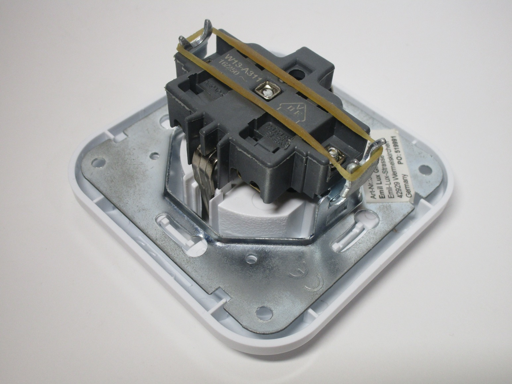

German-style "Schuko" plugs and sockets
The "Schuko" style of plugs and sockets are by far the most commonly used one in Europe, as well as South Korea and some parts of Africa and South America.
Schuko plugs have pins of 4.8mm diameter, spaced 19mm apart, and a deep recess which makes it impossible to touch the live pins of a plug. They're also non-polarised, so they can be inserted in either way, without any distinction between line and neutral.
Standard Schuko power socket
Rating: 16A 250V
This is a fairly common example of a Schuko power socket, produced by the German manufacturer Busch-Jaeger. The socket mounts to a standard European wall box, either using screws or metal arms that push outwards, for compatiblity with older installations.
Removing the screw on the front lets you take off the front faceplate, exposing the wire connections. These are screwless - the wires (solid core only) are installed just by pushing them into the terminals, and they can later be released by using a plastic lever, which also covers the live parts of the socket, for safety.
Notably, this socket doesn't have any safety shutters, as these aren't mandatory in Germany. Other countries however, such as Denmark, Norway and Italy, have made shutters a compulsory feature.


Socket with shutters
Rating: 16A 250V
Despite the similar appearance, there are some differences between this power socket and the one shown before; mounting and installation is essentially the same, however, this socket has an older style of terminals, which does use screws.
These terminals work using a small metal bar, which is raised by tightening a screw, which then pushes the wire upwards and forms a stable connection. This installation method takes longer than the screwless one shown in the Busch-Jaeger socket, and has thus become less common; however, it does enable the use of stranded core wire.
{kind=link}
{kind=link}

Surface-mount IP44 socket
Rating: 16A 250V
This surface-mount power socket is a type commonly found in places like garages, where surface wiring is often used. The socket is IP44 rated, which means it can resist light splashes - while not rain-proof, this is perfectly adequate for a garage.
Wiring is quite simple: there are two removable rubber grommets, on the top and bottom of the device, which a hole can be punched through for a cable or conduit. The terminals are of the style shown before, with screws.


{kind=link}